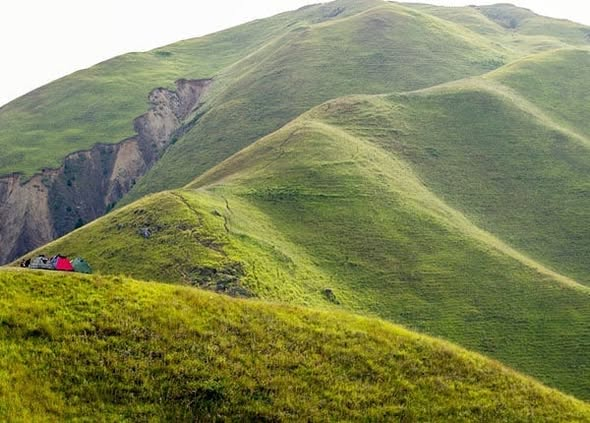
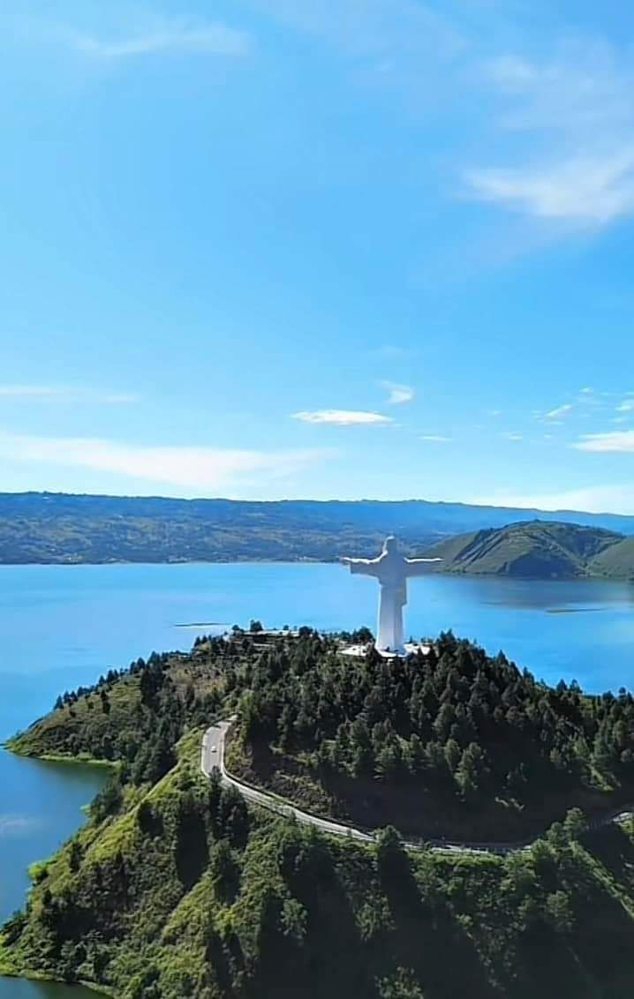

Gunakan dua jari untuk menggeser peta
*Gunakan ikon di pojok kanan atas peta untuk memfilter lokasi.
Gunakan peta interaktif di bawah untuk menemukan titik koordinat wisata, sejarah, dan keajaiban alam di jantung Danau Toba.
*Gunakan ikon di pojok kanan atas peta untuk memfilter lokasi.
Temukan keajaiban di setiap sudut Pulau Samosir

"Bukit Teletubbies" dengan panorama 360 derajat Danau Toba yang memukau.

Keindahan air terjun yang melebar seperti tirai perak di tengah tebing hijau.

Ikon baru Samosir dengan jalan berkelok eksotis dan patung Yesus tertinggi.

Pantai unik di tengah pulau dengan pasir putih dan ombak air tawar yang tenang.

Titik tertinggi untuk melihat kemegahan kawah Danau Toba dari ketinggian.

Pintu gerbang budaya Samosir dengan pasar souvenir dan pertunjukan Sigale-gale.

Kompleks makam batu megah penguasa Tomok yang berusia ratusan tahun.

Rumah Bolon asli tempat menyaksikan tarian Tor-Tor dan ritual kuno Batak.

Kampung adat yang terkenal dengan kerajinan tangan dan situs sejarah peninggalan raja.

Situs pengadilan kuno suku Batak di bawah pohon suci Hariara.

Lokasi terbaik untuk foto Instagramable dengan latar biru Danau Toba yang luas.

Salah satu air terjun tertinggi di Indonesia yang langsung jatuh ke arah danau.